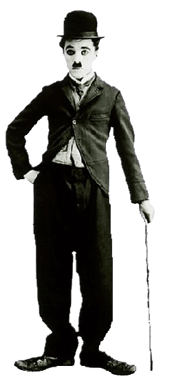
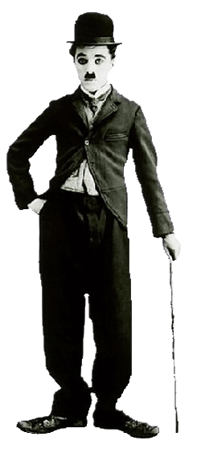

Чарльз Спенсер Чаплін народився 16 квітня 1889, в Лондоні, в Великобританії, в родині акторів мюзик-холу і з дитинства виступав на сцені. У 1914 році, приїхавши на гастролі в США з пантомімічною трупою Фреда Карно, дебютував на екрані в комічному фільмі студії Мака Сеннета «Заробляючи на життя», але відомий глядачам образ Чарлі (непомірно широкі штани, піджачок в обтяжку, занадто великі черевики, вусики, шляпа і тростина) народився після зйомок майже в десятці короткометражних стрічок ( «Дитячі автогонки в Венісі», «Між зливами», «Кращий мешканець», всі – 1914).
До 1918 року він був одним з найвідоміших діячів кіноіндустрії. Чаплін писав, режисирував, продюсував, редагував, знімався і складав музику для більшості своїх фільмів. Він був перфекціоністом, і його фінансова незалежність дозволила йому витратити роки на розробку і виробництво картини.
У 1919 році Чаплін став співзасновником дистриб’юторської компанії United Artists, що дало йому повний контроль над його фільмами. Його перші повнометражні фільми: Дитина (1921), Жінка в Парижі (1923), Золота лихоманка (1925), «Цирк» (1928). У 1931 році Чаплін зняв свій перший звуковий фільм “Вогні великого міста”. Однак, ввівши в картину звуковий супровід і музику, він відмовився від акторської мови.
У роки Другої світової війни актор писав антифашистські статті, виступав перед солдатами. У вересні 1952 Чаплін відплив з сім’єю на гастролі в Англію. Уже перебуваючи в морі, актор дізнався, що втратив право на повернення в США. Залишок життя провів в Швейцарії.
У 1957 році вийшла комедія “Король в Нью-Йорку”, в якій Чаплін створив образ вигнаного зі свого королівства короля Шедова. Фільм був заборонений до показу в США. Останньою картиною Чапліна стала салонна комедія “Графиня з Гонконгу” (1967) з Софі Лорен і Марлон Брандо.
У 1971 році Чаплін був удостоєний спеціального призу Каннського фестивалю, в 1972 році отримав “Золотого лева” міжнародного кінофестивалю у Венеції, а також кінопремію “Оскар” “За видатний внесок у перетворення кінематографа в мистецтво”.
Помер 25 грудня 1977 року. Чарлі Чаплін був одружений чотири рази. Всього у Чапліна було 11 дітей.


 
